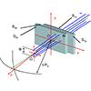
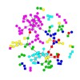

For Students
I seek talented grad students for AI+SE. Is that you?
For Industry
Ask me how to innovate. On time. On budget. Case studies:
My Funding
$11M (total). From many sources, e.g.:


- Awards:
- IEEE Fellow (2019)
- Publications:
- H-index: 53 (Jul'19).
- Papers: 96 journal + 131 conference + 57 other
- Government work:
- NASA software research chair: 2002-2004
- NSF panelist: 11 times (2003-2016)
- Journal work:
- assoc. ed.: CACM, TSE, TOSEM, JSS, EMSE, IST, ASEJ, IEEE Software, SQJ, Big Data Research, IET Software
- Conference work:
- co-general chair: ICMSE'16; RAISE'19, PROMISE'05..'12
- coPC chair:PROMISE'20, SSBSE'17,NEIR'15,ASE'12
- program committees: ICSE'20, FSE'19, ASE'19, MSR'19, SSBSE, PROMISE,...
- Research students: (total)
- Ph.D.: 10 current. 11 past. Masters (by research): 30
- Current graduate students (at the RAISE lab: real-world AI for SE):
- Researchers usually seek solutions that are more intricate and complex;
- Yet empirically & theoretically the world we can know is very simple;
- So can you do "it" better, with less?


My prior graduates:

I challenge my students as follows:
Here is a sample of their results (and for more, see Google Scholar):
Software defect prediction
2018
By looking at 100s of projects, we can find very simple predictors of next month's bugs.
2017
Intelligent defect predictors can stop developers wasting time while they are fixing bad smells.
2015
A simple feature and instance selectors let software projects share privatized data, without missing important patterns.
2012
Very simple social metrics can generate near-optimal predictors for software quality.
2010
Static code defect predictors have inherent limitations. But these limits can fixed via a new learner, very simple learner, that better understand the business goals.
2007
Surprisingly effective defect predictors can be built from simple static code attributes.

Search-based SE
2018
Search-based methods can be 500 times faster than deep learners.
2017
Very simple optimizers can out perform overly complex deep learners.
2016
Very simple optimizers can dramatically improve the performance of data miners learning software quality predictors.
2013
active learners can simplify and reduce the cost of search-based se by orders of magnitude.
2002
Search-based SE methods can easily and readily and critically assess long held SE truisms.
Transfer learning
2018
The bellwether effect teaches us much about generality in SE.
2017
Even when project data collects data using different labels, we can still transfer lessons learned between them.
2016
Ultra-simple transfer learning methods (called "bellwethers") enable effective transfer of lessons learned.
2013
How to transfer lessons learned from past projects? Easy! Clustering tools enable transferring lessons learned between software projects.
2009
A simple nearest neighbor relevancy filtering resulted in one of the first general results in software analytics: defect predictor learned from Turkish toasters could be successfully applied to NASA flight software (and vice versa).

Requirements engineering
2017
Seemingly complex, conflicting models can be tamed and controlled via some simple stochastic probing.
2003
Contrast set learners can explain enormous decision trees (6000 node) learned from complex requirements models just 6 rules.
2002
Contrast set learners find simple controllers in requirements models.
Effort estimation
2016
The effort to build complex software can be estimated by very simple equations.
2013
Active learners can easily estimate large software projects after just a few samples.

Other applications
2018
To tame cloud computing, use next generation algorithms
2016
Text miners can succinctly summarize thousands of technical papers about SE.
2015
Data miners can greatly simplify and reduce the effort involved in data collection for community health studies.
2010
Simple contrast-set learners out-perform state-of-the-art optimizers for spacecraft control;
1990
The lesson of decades of expert systems research is that, for specific domains, human expertise can be readily captured in just a few rules.
BTW: for the origins of the "Less, but better" mantra, see Dieter Rams' 10 principles for good design.